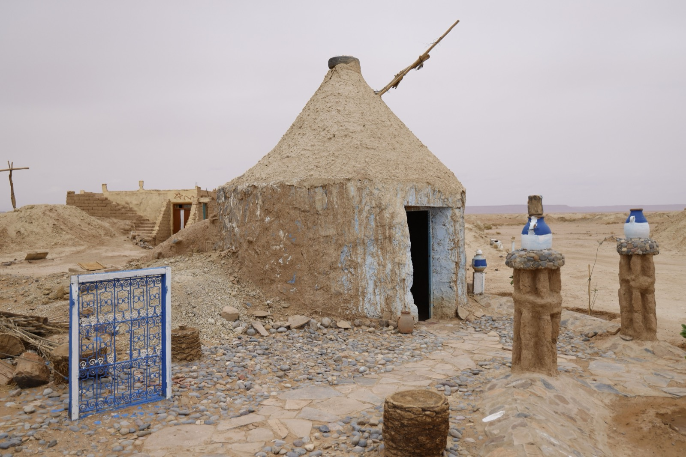

Adobe Homes
Sun-dried earth bricks — the building method a third of humanity still lives in. Cheap, cool, and beautiful, with two real enemies: water and earthquakes.

Adobe is the original building material: bricks of earth, sand, and straw, shaped in molds and dried in the sun, then stacked with mud mortar and plastered. Roughly a third of the world's population lives in earthen homes, and adobe is why. It's dirt-cheap, keeps interiors remarkably cool, and looks timeless — but it has two real enemies.
How it's built
Clay-rich soil is mixed with sand and straw (the straw prevents cracking), packed into wooden molds, and left to dry in the sun for days to weeks. The finished bricks are laid in courses with a mud mortar on a solid, moisture-resistant foundation, then protected with earth or lime plaster. The thick walls (often 30–50cm) give adobe its signature thermal mass — soaking up daytime heat and releasing it at night.
What does it cost?
The material is close to free if you have suitable soil — the cost is labor and time. DIY earthen shells can be built for very little (roughly $20–80/m² in materials); contracted adobe with proper engineering and finishes lands mid-range. (Approximate; varies enormously by labor and finish.)
The trade-offs at a glance
| Factor | Rating | Notes |
|---|---|---|
| Cost | 🟢 | Material ~free; labor-intensive |
| Sustainability | 🟢 | Earth = lowest embodied energy |
| Heat/climate fit | 🟢 | Thermal mass = cool interiors in hot-dry |
| DIY-friendly | 🟢 | Low-skill, high-labor |
| Build speed | 🔴 | Slow — bricks must sun-dry |
| Moisture/rain | 🔴 | Water is adobe's #1 enemy |
| Seismic/wind | 🔴 | Unreinforced adobe fails in quakes — must reinforce |
| Permitting/finance | 🟡 | Codes vary; engineered adobe permits better |
Buildability — how hard is it to actually build?
On pure skill, adobe is one of the most accessible methods — communities have built it for millennia without machinery. The difficulty isn't laying bricks; it's the two things that get earthen homes condemned: seismic safety (unreinforced adobe performs badly in earthquakes, so seismic zones require concrete bond beams, rebar, or buttressing — engineering you can't skip) and permitting (many building departments don't have adobe in their code, so approval and financing can be a fight). In a hot-dry climate adobe is close to ideal; in a wet tropical one it demands a tall foundation, big roof overhangs, and diligent plaster maintenance, because sustained moisture will literally dissolve an unprotected wall.
Thinking about building in Panama or Costa Rica?
SORA is a fixed-price design-build platform for foreign buyers. We build in reinforced concrete by default — and we can talk you through when an alternative method actually makes sense for the tropics. Play with cost live in the 3D configurator.
See real 2026 build costs →Frequently asked questions
Are adobe homes cheap to build?
The earth itself is nearly free, so material costs are very low — the real expense is the labor and the drying time. DIY adobe can be extremely cheap; professionally engineered and finished adobe is mid-range.
Do adobe houses hold up in earthquakes?
Unreinforced adobe performs poorly in earthquakes — it's heavy and brittle. In seismic areas (like much of Latin America) adobe must be reinforced with concrete bond beams, rebar, or buttressing to be safe, which adds cost and engineering.
Can you build adobe in a humid tropical climate?
It's possible but harder — water is adobe's main weakness. A humid or rainy climate requires a raised, moisture-proof foundation, generous roof overhangs, and well-maintained plaster. Adobe shines in hot-dry climates and is more demanding in wet ones.
Sources & verification
Figures in this guide were checked against primary and authoritative sources on 27 July 2026. Immigration, tax, and cost figures change — always confirm the current rules with the official body or a licensed professional before acting.
- Build With Rise — earthen building overview
- SustainDev — earth building materials